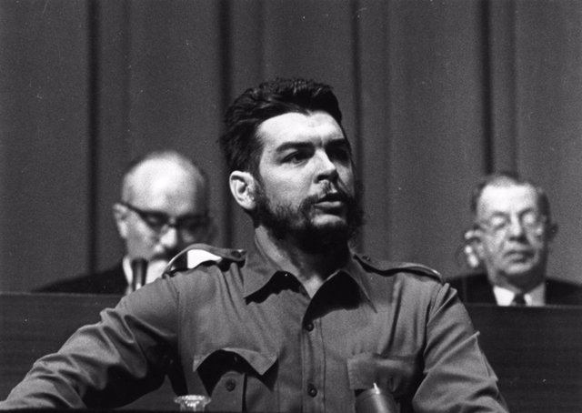
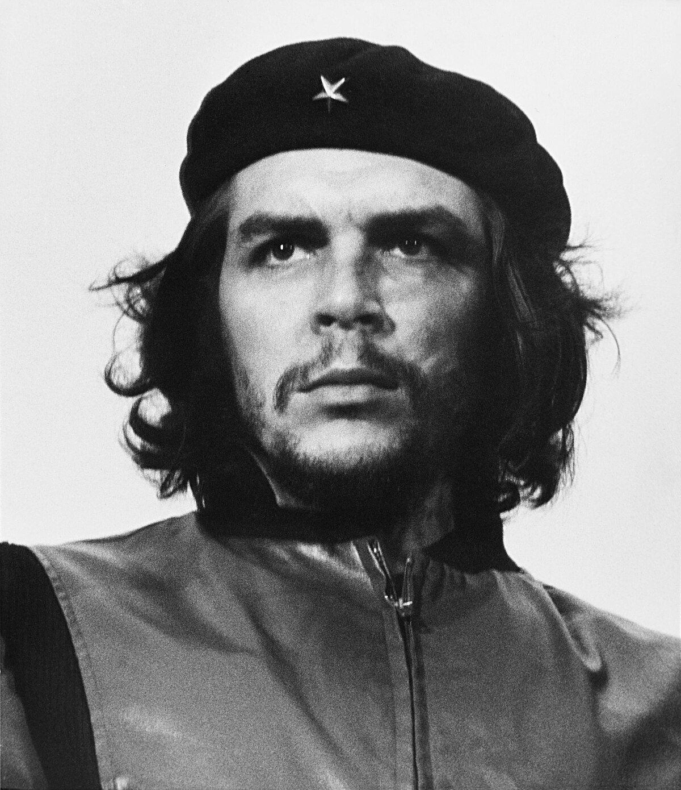
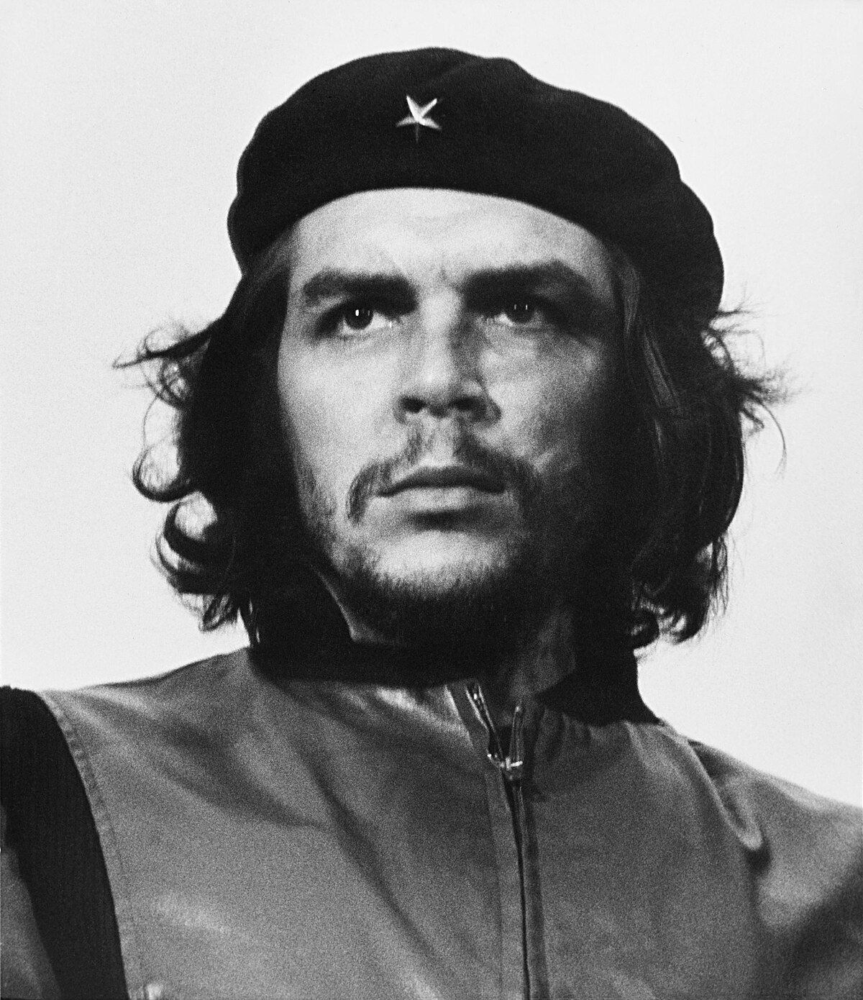
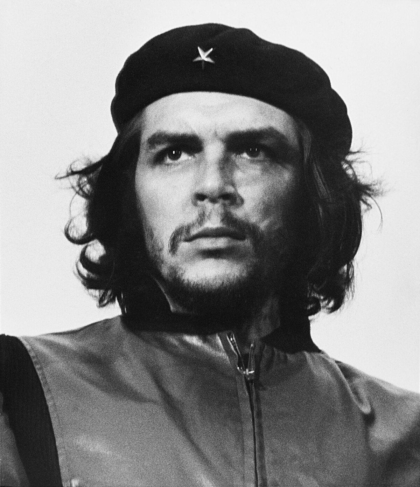

Home
Che Archive
Che Guevara

"I am not a liberator. Liberators do not exist. The people liberate themselves."
-Che Guevara

Born: 14 June 1928
Died: 9 October 1967
Was from Argentina
Member of the 26th of July Movement
Helped greatly in the Cuban Revolution as a guerilla soldier and later politician
 
